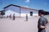
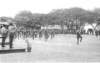
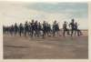
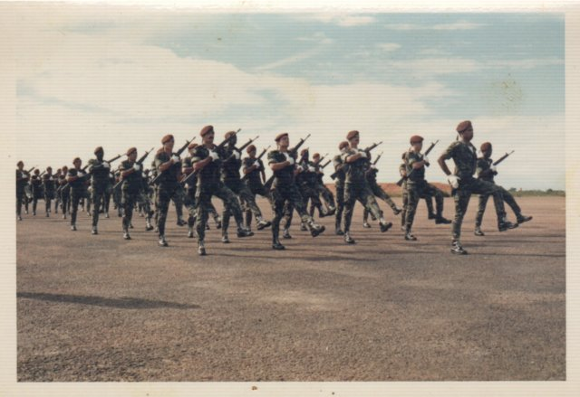

Início
O 26º. Curso de Comandos
Imagens do curso
A Acção Psicológica
Cerimónia de Encerramento
História Sucinta
A Companhia
As Operações
As Operações
Fotos em Parada
Filme
A Fase da Amadora
Galeria
Em Pose
À volta da mesa
Almoços-Convívio
Mais Informações
Notícias
Testemunhos
Muito Importante
<< Anterior
Início
Próxima >>



312-A

Photo album created with
Web Album Generator